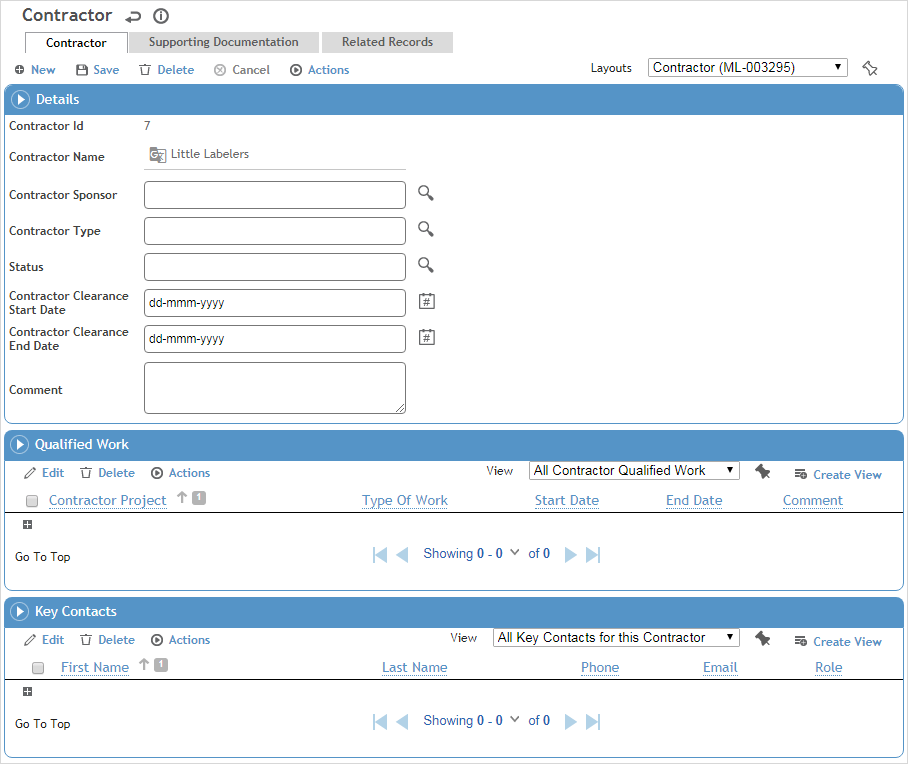

A contractor record can include the projects that the contractor is qualified to work on, supporting documentation and notes, as well as links to findings and actions, questionnaires, or incidents associated with the contractor.
In the Safety menu, click Contractors.
Click a link to view details of a contractor, or click New to enter a new contractor

.
Enter the Name of the contractor, and record information about their status as a contractor in your organization:
Select the employee Sponsor who is responsible for this contractor.
Select the Contractor Type and their Status in your organization.
Enter the dates they are cleared to work in your organization.
Click Save.
In the Qualified Work section, identify any projects that the contractor is cleared to work on, along with the Type of Work they are cleared for, the Start/End Dates of this clearance, and the Primary Contractor if this is a subcontractor (as indicated in the Contract Type field). The contractor is added to the Qualified Work section on the project record.
Record the Key Contacts at the contractor company. If you have added this section as a separate tab on a custom layout, you can record more details about the employee. If not, you can open the contact record from the Contract Employees module to add detail there (choose Contract Employees in the Safety menu).
On the Supporting Documentation tab, capture any external documents or other notes that you want to retain about this contractor. For more information, see Linking or Importing a Document or Adding Notes to a Form.
The Related Records tab will display any questionnaires or incidents that have been associated with the contractor (provided the Contractor field has been added to a custom layout of those records). You can also create a new related record (e.g. permit, audit, inspection, change request, etc.) associated with this contractor.
Similarly, the Findings and Actions tab will display any findings and actions that have been associated with the contractor.
The Letters tab allows you to view past letters or generate new letters to employees. Form letters are stored in the LettersTemplate look-up table. For information about creating letters, see Generating a Letter.
The Forms tab displays all forms in the PDFForm look-up table that have been linked to the Contractor module. Open and complete these as required.
The Related Projects tab displays any projects that are linked to the contractor. You can also create a new project from this tab. For more information, see Managing Projects.
Click Save.